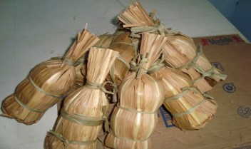
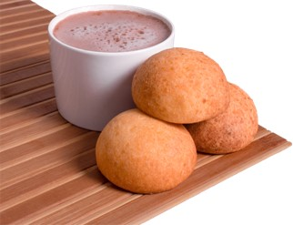
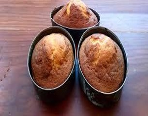

Dulces Tradicionales
Descubre los maravillosos platillos, bebidas y dulces tradicionales que el municipio
de Toledo tiene para ofrecer

Descubre los maravillosos platillos, bebidas y dulces tradicionales que el municipio
de Toledo tiene para ofrecer

Los alfandoques (también llamados alfondoques) son dulces artesanales tradicionales de Colombia y Venezuela, elaborados principalmente a partir de la melaza de la caña de azúcar o panela.
Las paledonias, cucas o catalinas son galletas suaves y especiadas, preparadas con melao de papelón, harina, bicarbonato y canela.
Se caracterizan por su forma redonda, a menudo con bordes en flor, y una textura esponjosa. Se disfrutan tradicionalmente acompañadas de queso llanero, guayanés o mozzarella o de hoja, creando un contraste dulce-salado, siendo ideales como merienda.

Las almojábanas son uno de los amasijos más emblemáticos de la gastronomía colombiana, especialmente en la región andina. Son panecillos redondos, de textura suave y esponjosa, cuyo ingrediente estrella es el queso, usualmente cuajada o queso fresco.

Mantecada casera es una forma deliciosa de revivir sabores tradicionales con una textura suave y esponjosa. Dependiendo de si prefieres la versión estilo muffin (popular en México) o la versión de bizcocho grande (tradicional en Colombia), los ingredientes y procesos varían ligeramente.